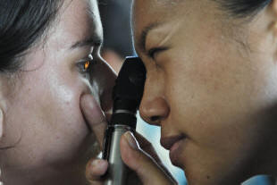
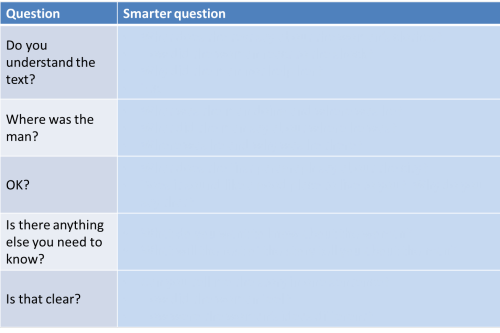
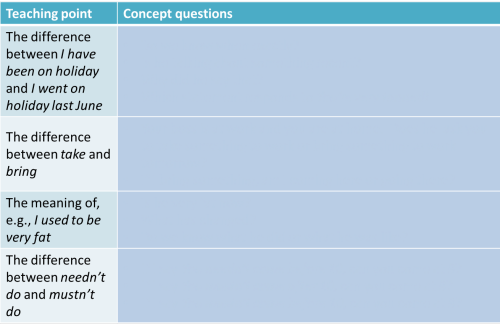

Checking learning: the essentials
|  | This guide is concerned with keeping your eye
on the target language in a lesson and checking as you go along
that what you want to be learned is really being learned. It is not a particularly simple thing to do because it requires you to see inside your learners' heads in some way. In tackling this guide, it will help if you have followed the guide to how learning happens. |
 |
Why is it important? |
That's a pretty obvious question with straightforward answers. Click here when you have some.
- Because if you don't check from time to time, you are in danger of going on too quickly and wasting your and the learners' time. In most lessons, what comes later depends on how well earlier material has been absorbed. This goes for a series of lessons, too, of course.
- Because language in controlled practice activities can often be produced with adequate accuracy but without the learner actually having acquired it.
- Because learners, too, need to know where they are and be able to judge whether or not they can use the language they are supposed to be learning.
 |
Ways to check |
1. Asking
You can, of course, ask your learners what they think. What's wrong with that? Click on the table when you have thought of something to put in the right-hand column.

You see the problem. Asking direct questions such as these may
get the answer you want to hear (or the learner thinks you want to hear) or may simply demonstrate that the
learner either doesn't know or won't give a straightforward answer.
Bear in mind, too, that learners from some cultural backgrounds expect
you to expect them to say Yes.
Obviously, the better your learners know and trust you and the safer
your classroom is as a place to take risks and be open, the better will
be your success with questions like this but there are better ways to
get at the data you need.
 |
Asking smarter questions |
- Display questions vs. Real questions
- display questions are those the teacher asks to which he/she
already knows the answer. The learner has to display his/her
knowledge. Real questions are those you ask for which you do
not know the answer and may be more interesting for the learner to
answer.
Asking display questions is a legitimate teaching technique but be aware that learners tire of them.
For example,
What does it say in the text about the city?
is usually a display question because you know, and the learners know you know, the answer better than them.
What do you think of this character?
is, however, a real question. The learner knows that you don't know the answer but the response can still tell you how much the learner has understood about the character in a text. - Open vs. closed questions
- Open questions require a much more elaborate answer than closed
questions. For example,
Where is he?
simply requires a one-word answer like Margate unless you insist on making your learners produce inauthentic language ('Answer in a full sentence, please'). It's a closed question.
Is he happy
is also a closed question.
Why is he not happy?
is an open question because it demands a fuller response. It may, of course, still be a display question.
We need to be slightly careful here because a question beginning with Why can be asking for purposes as in, e.g.:
Why did John take the money?
or it can be asking for reasons as in, e.g.:
Why was the house dirty?
Generally, questions which require the learner to say when, where, who, what are closed questions but questions that require them to state a reason or speculate about why or how are open questions and will give you more data about how the learners are thinking and understanding.
Questions which use the word if are also open questions requiring more data from the learners. For example,
What will/would happen if ... ? - Other types of questions
- Clarifying questions: What do you mean by ...,
Can you tell me more about ... etc. are open questions which will
tell you more than closed questions and will stretch your learners.
Questions which ask for critical awareness such as: What are your reasons for saying that? are useful to give you some insight into the thought processes of your learners.
Comparison questions: What is different about X from Y? etc. also require the learner to demonstrate what he/she knows or has understood about X or Y.
Affective questions are generally real: What do you feel about ... ?, How did the story affect you? etc. and these are important to engage and interest learners in a text's content rather than just using the text as a vehicle for something else.
Now try a little test. Can you think of better questions to ask than the ones on the left? Click the table when you have for some examples.

Your suggestions will probably be different but you have the idea.
 |
Concept checking |
It was noted above that asking a learner to come up with a dictionary
definition of a word or a grammar rule is rarely successful. Most
native speakers will have trouble doing that and it's unfair to ask a
learner of the language to attempt it.
However, we do need to check whether learners have understood a concept
expressed through a particular structure or a piece of new lexis.
Concept-checking questions (CCQs in the trade) are one good way but they
need to be thought about. The more experience you have the easier
it becomes to ask good concept-checking questions.
Two examples:
- You have just taught the meaning of the verb in They
unearthed a whole new temple.
Some possible CCQs:- Did they dig the temple up or bury it?
- Does this verb take an object? Always?
- What else can you unearth, for example?
- What's the opposite of unearth?
- Can you unearth an idea? A fish? A secret? A reason?
- You have just introduced going to in a dialogue about
someone's plans for the evening.
Some possible CCQs:- How sure is he that he is going to the restaurant on the corner?
- When did he make the decision to go?
- Has he just decided to go or did he decide yesterday when he was invited?
- When did Mary invite him? Did he say Yes or No? When did he say Yes?
- Why did he agree to meet at the restaurant?
and so on. The purpose of a CCQ is to make it 100% clear to you
and the learners that the concept has been grasped. If it hasn't
you may need to abandon the plan and re-present the language somehow or
go back to the dialogue.
Notice that a good concept-checking routine will often include a check
of meaning and form as in Example 1 above, which also checks collocation
and transitivity.
Can you come up with some good CCQs for the teaching points on the left? Click on the table when you have.

 |
By the end of a lesson |
All the above is about checking learning as you go along but we also
need to check at the end of a lesson somehow. Learners, too, want
some way of knowing whether their efforts have been successful.
The most obvious way is to give the learners a test of some sort but if
the ability to use the target language or skill naturally was the
objective of the lesson, that may not be a good guide.
Fortunately, there are ways to check which don't look like tests:
- Reducing the amount of control
- It's normal near the beginning of lessons (especially if the
target is new to the learners) to get them to understand and use the
language in very controlled situations. This may be through
things like recognition exercises, gap-fill texts or controlled
writing of sentences and so on.
As the lesson progresses, it is also normal gradually to reduce the amount of control so that the learners start to engage with the language more personally. For example, exercises such as Finish the sentences in a way that is true for you, Find out three things that the other two people at your table used to do and have given up etc. - Free(r) practice
- By the end, the learners should have control of the form or
skill so they can deploy it naturally in language which means
something to them personally and which is produced entirely by them.
Very few exercises in classrooms are entirely free of course because
you will still be bearing the targets in mind and requiring the
learners to use language or a skill you have taught.
Examples of this kind of exercise are writing a personal note to each other, skimming a TV listing to find something they are going to watch tonight, talking to each other about future plans and hopes, a group discussion about what's wrong with the place they live in and so on.
When you plan a lesson, ask yourself whether you have included appropriate and clear ways to check learning. If you haven't, go back and think again.
Your role when activities like this are happening is to monitor and listen / read very carefully. You need to know if the learners have mastered the target language or skill and whether they feel happy and comfortable using it.
| Related guides | |
| testing: the essentials | the essential guide to using tests in the classroom to check or aid learning |
| teacher talk | for a general guide to being clear, simple and unambiguous |
| teacher roles | for a guide to what role teachers need to be in at what stage of the lesson |
| asking good questions | for a guide to how to check learning through the use of questions |